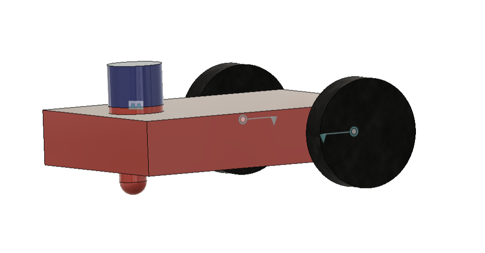

What is ROS 2?
ROS 2 (Robot Operating System 2) is an open-source robotics middleware used to build scalable and real-time robotic systems.
It provides tools for distributed communication, hardware abstraction, robot simulation and visualization. ROS 2 can be integrated with simulation platforms such as Gazebo and visualization tools such as RViz2.
System Requirements
Space Occupied
Installing ROS 2 Humble
The following commands can be used to configure the required locale, repository and install ROS 2 Humble Desktop.
sudo apt update
sudo apt install locales
sudo locale-gen en_US en_US.UTF-8
sudo update-locale LANG=en_US.UTF-8 LC_ALL=en_US.UTF-8
sudo apt install curl gnupg2 lsb-release
sudo curl -sSL https://raw.githubusercontent.com/ros/rosdistro/master/ros.key \
-o /usr/share/keyrings/ros-archive-keyring.gpg
echo "deb [arch=$(dpkg --print-architecture) signed-by=/usr/share/keyrings/ros-archive-keyring.gpg] \
http://packages.ros.org/ros2/ubuntu $(lsb_release -cs) main" \
| sudo tee /etc/apt/sources.list.d/ros2.list > /dev/null
sudo apt update
sudo apt install ros-humble-desktop ros-dev-toolsSource Environment
After installing ROS 2, source the ROS environment so that ROS commands are available in the terminal.
echo "source /opt/ros/humble/setup.bash" >> ~/.bashrc
source ~/.bashrcROS 2 Workspace Setup
A ROS 2 workspace provides a structured location for developing and building robot packages.
mkdir -p ~/ros2_ws/src
cd ~/ros2_ws
colcon build
source install/setup.bashCreating URDF / Xacro Files
Robot components can be designed using CAD software and exported as .STL files. These components can then be described using URDF/Xacro files.

Final Robot Design
- Export robot parts from Fusion 360 as .STL files.
- Create a ROS 2 description package.
cd ~/ros2_ws/src
ros2 pkg create \
--build-type ament_cmake \
my_robot_descriptionPackage Structure
my_robot_description/
├── urdf/
│ ├── robot.urdf.xacro
│ ├── base.xacro
│ └── wheel.xacro
└── launch/
└── display.launch.pyBuild & View in RViz2
After creating the robot description package, build the workspace and launch the robot model in RViz2.
cd ~/ros2_ws
colcon build
source install/setup.bash
ros2 launch my_robot_description display.launch.pyRun Simulation in Gazebo
Gazebo can be used to simulate the robot in a virtual environment. Create a Gazebo launch file inside the package's launch directory.
ros2 launch my_robot_description gazebo.launch.pyManual Robot Spawning
Alternatively, the robot can be spawned manually using the following command:
ros2 run gazebo_ros spawn_entity.py \
-topic /robot_description \
-entity my_bot \
-x 0 -y 0 -z 1Add Gazebo Plugin
Gazebo plugins can be added to the robot description to enable additional simulation functionality.
<gazebo>
<plugin
name="gazebo_ros_control"
filename="libgazebo_ros2_control.so"/>
</gazebo>Gazebo Simulation Preview
The completed robot model was tested in the Gazebo simulation environment.
Conclusion
This assignment provided a complete workflow for working with ROS 2 Humble, from installation and workspace configuration to robot modeling and simulation.
The workflow covered URDF/Xacro creation, RViz2 visualization and Gazebo simulation, providing practical experience in robot description and virtual testing.
Assignment Documentation
View the complete ROS 2 & Gazebo documentation.